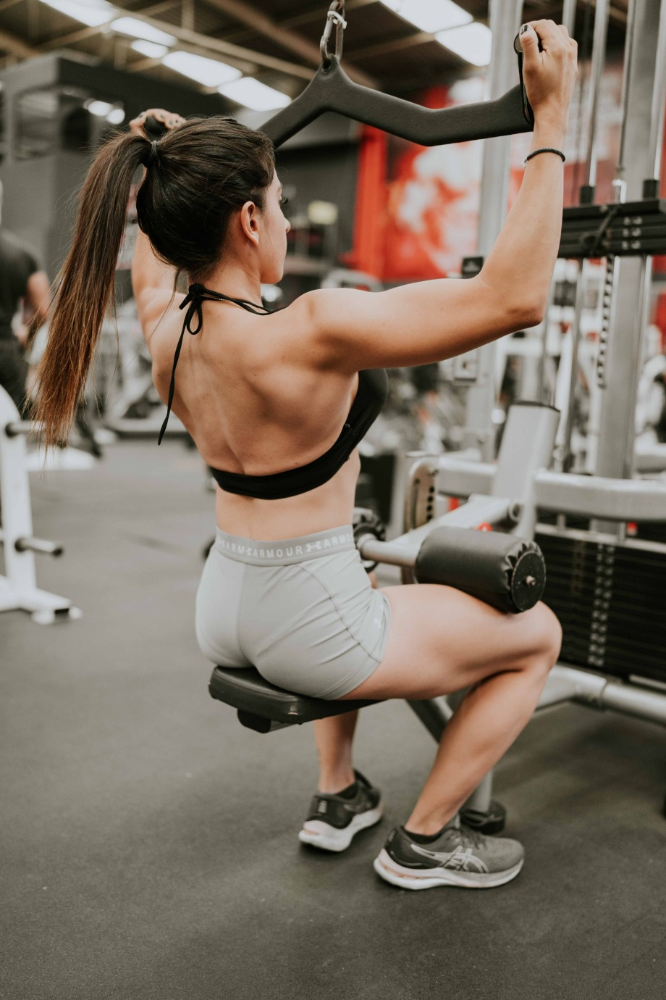

Full Body
Rutina quema grasa que combina movimientos aeróbicos (de steps, tae box y baile) con ejercicios de entrenamiento tipo saltos, piques, dinámicas grupales. Tiene como objetivo mejorar el rendimiento físico, coordinación y quemar muchas calorías.